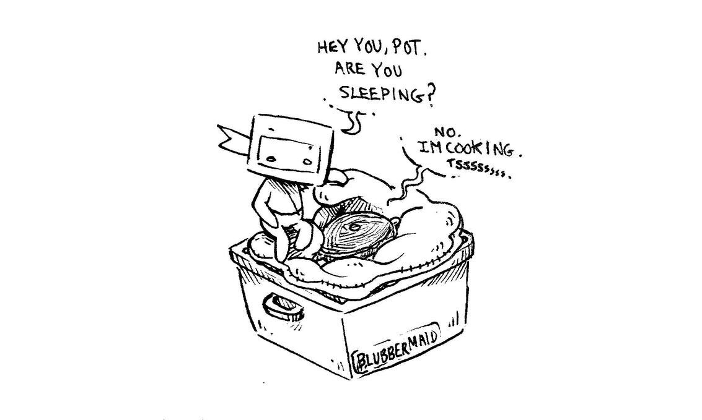

insulation cooking
There are insulation cookers on the market, but it is possible to make one for cheap by using thick blankets or a sleeping bag. To make a quick insulated space, use a plastic bin, or wooden crate, and fill it with thick blankets or a sleeping bag, leaving a deep well in the center. Insert the pot in the well and cover with more blankets. The pot will stay warm for hours.
We have cooked stovetop cakes using this method .

It’s also possible to cook rice in a thermos, by simply pouring hot water over it and leaving it to slow cook.